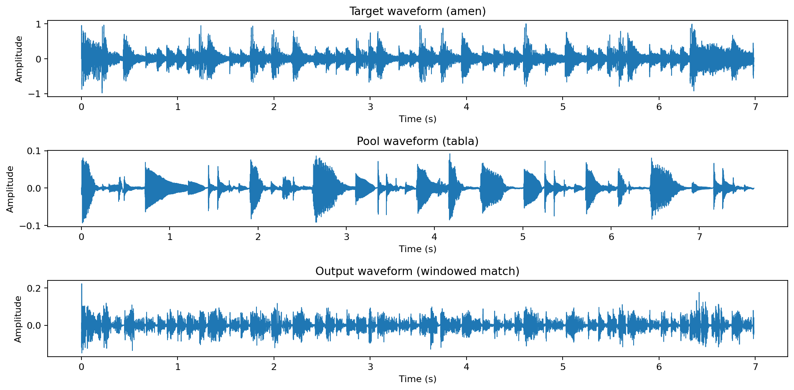
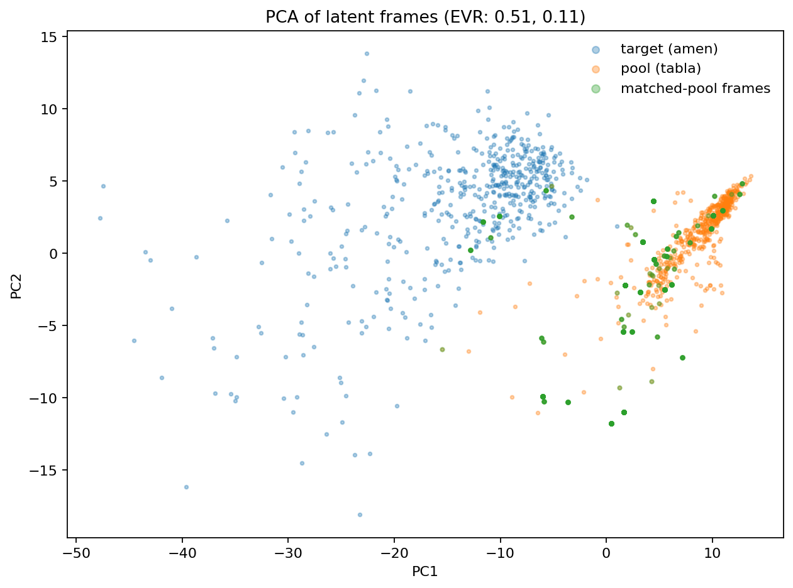
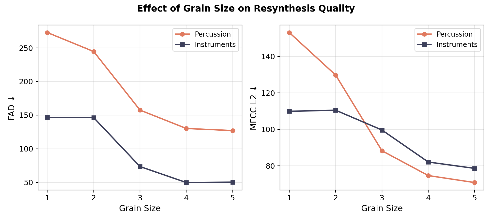
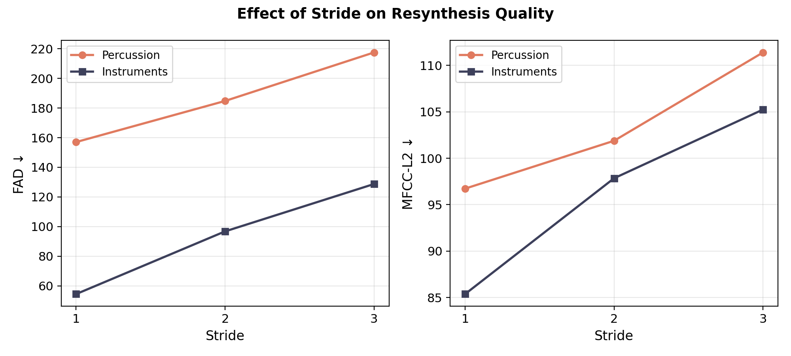
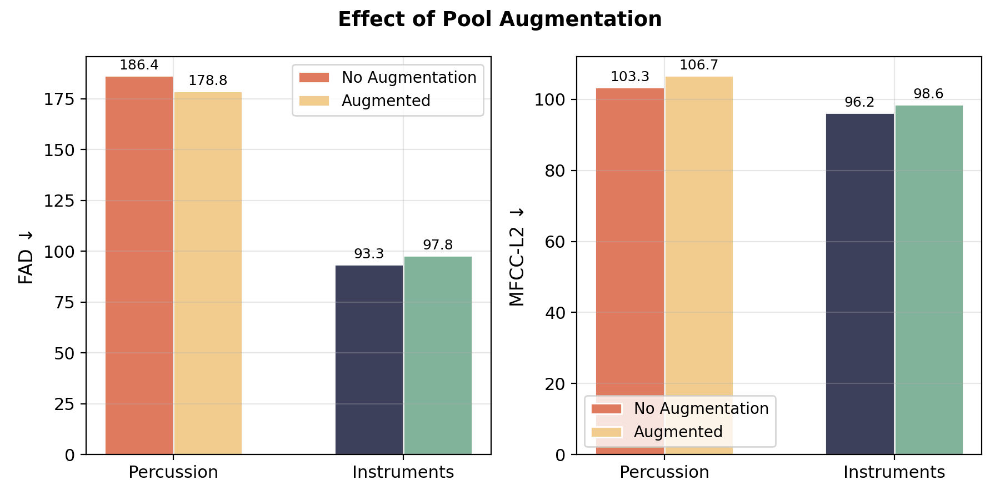
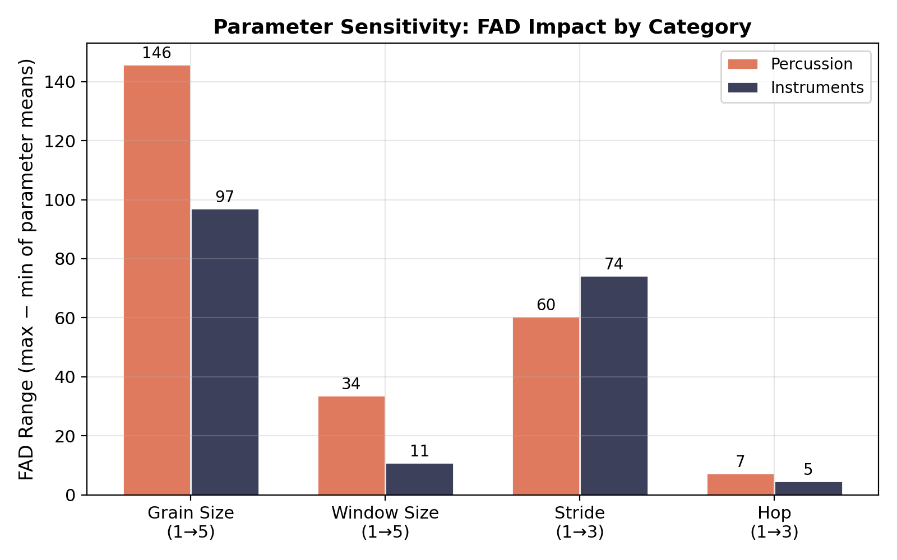

Introduction
Treat a neural audio codec as a granular synthesis domain: encode a target and a source pool into Encodec latents, then re-synthesize the target by replacing each latent frame with its closest match from the pool. This keeps the target’s macro-timing while transplanting timbre from the pool.
What we do
We perform granular resynthesis in Encodec’s 128‑D latent space using windowed cosine similarity matching. Matching uses a local context window; output is assembled with configurable hop/stride and optional multi‑frame grains (overlap‑add) for smoother sustained content. We also evaluate pedalboard-based pool augmentation.
Motivation
Tokui-style latent granular resynthesis is compelling because it is training-free: it reuses a pre-trained codec and works immediately on arbitrary audio. What’s missing in prior work is (1) a practical map of the parameter space and (2) an interface where those parameters become audible.
Experimental setup
- Categories: percussion (amen, tabla, trap hats, tribal) and instruments (flute, sax, violin, jazz piano)
- Pairs: all ordered target→pool permutations within each category
- Grid: grain_size ∈ {1..5}, window_size ∈ {1..5}, stride ∈ {1..3}, hop ∈ {1..3}, augmentation ∈ {none, augmented}
- Metrics: MFCC‑L2 (mean MFCC distance to pool) and FAD (distributional distance to pool embeddings)
Percussion: what moves the needle
Percussion is transient-dominated, so “frame-wise” matching can be brittle: small timing mismatches become clicks, and longer grains can smear attacks.
Simple cosine matching: works on noisy texture (kitchen pan)
tokui_style_transfer_cosine…but fails on structured percussion (amen → tabla)
tokui_style_transfer_cosineWindowed matching helps tabla: adds local context
tokui_style_transfer_window (window=3)Grain size tradeoff: bigger grains smear transients
On percussion, increasing grain_size can reduce discontinuities but often softens attacks (less “snap”).
tokui_style_transfer_window (window=3, stride=1, hop=1)Notebook plots (amen → tabla, windowed match)
Waveforms: the output keeps amen’s timing density but inherits more tabla-like envelope/dynamics (often lower peak range).

PCA: target and pool occupy distinct regions. Matched-pool frames and output concentrate near the pool region, which is consistent with “projecting” the target trajectory onto pool-like latent vocabulary rather than interpolating between them.

Instruments: smoother latent trajectories
Sustained/harmonic sources tend to benefit from longer grains: you preserve partials over multiple frames and reduce “jitter” from frame-to-frame token jumps.
Bigger grains help: violin → sax
tokui_style_transfer_window (window=1, stride=1, hop=1)Augmentation matches the pitch better (more codebook coverage) but the output is still not smooth and metrics are worse.
FAD and MFCC get worse with augmentation but perceptually the pitch is matched better with augmentation!
The pitch/gain-shifted pool variants broaden the pool's latent coverage, so the matcher finds closer harmonic candidates
Evaluation plots
Grain size sweep. Larger grains reduce frame-to-frame jitter and tend to lower FAD (especially for instruments), but can smear percussion transients.

Stride sweep. Stride=1 is consistently best; higher stride reduces query density and increases artefacts.

Augmentation. In aggregate it lowers percussion FAD slightly but worsens MFCC‑L2; for instruments it worsens both metrics on average (pair-specific exceptions exist). But more perceptual metrics are needed to evaluate the true impact.

Parameter sensitivity. Grain size and stride dominate; hop and window size are secondary and often pair-dependent.
